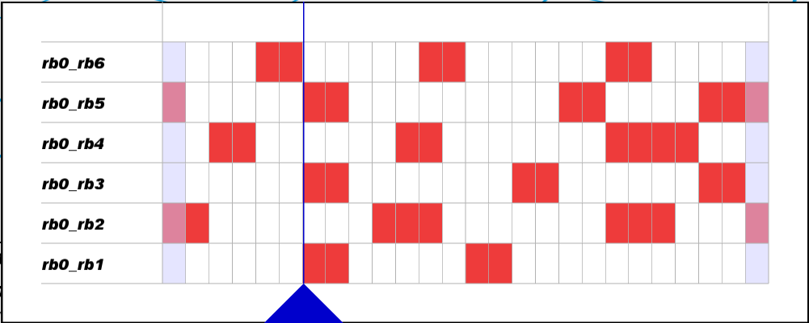
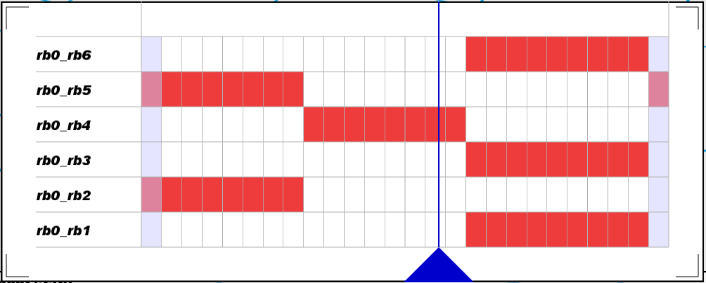

We compared our work with previous research in this field and got the following results:
Young Tabloid Method

Our Method

References
Haynes, Galen C., Fred R. Cohen, and Daniel E. Koditschek. "Gait transitions for quasi-static hexapedal locomotion on level ground." Robotics Research. Springer Berlin Heidelberg, 2011. 105-121.